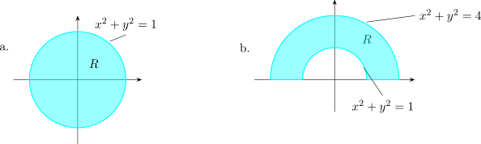
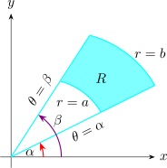
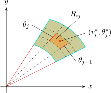
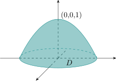

3.5 Double Integrals In Polar Coordinates
Suppose that we want to integrate \(\displaystyle {\iint \limits _R f(x,y)\hspace {0.1cm}dA}\) where \(R\) is one of the regions shown below.

-
- (a)
- \(\big \{ (r,\theta ) \hspace {0.1cm} \big |\hspace {0.1cm} 0 \leq r\leq 1\hspace {0.1cm}, \hspace {0.1cm} 0 \leq \theta \leq 2\pi \big \}\)
- (b)
- \(\big \{ (r,\theta ) \hspace {0.1cm} \big |\hspace {0.1cm} 1 \leq r\leq 2\hspace {0.1cm}, \hspace {0.1cm} 0 \leq \theta \leq \pi \big \}\)
In either case, the description of \(R\) in rectangular coordinates is rather complicated but \(R\) is easily described in polar coordinates.


\[R = \big \{ (r,\theta ) \hspace {0.1cm} \big | \hspace {0.1cm}a\leq r\leq b\hspace {0.1cm}, \hspace {0.1cm} \alpha \leq \theta \leq \beta \big \}\] Divide \([a,b]\) into \(m\) sub intervals and \([\alpha , \beta ]\) into \(n\) subintervals. The circles \(r=r_i\) and the ranges \(\theta = \theta _j\) divide the polar rectangle \(R\) into the smaller polar rectangles \[R_{ij} = \big \{(r,\theta )\hspace {0.1cm}\big |\hspace {0.1cm} r_{i-1} \leq r \leq r_j\hspace {0.1cm} , \hspace {0.1cm} \theta _{j-1}\leq \theta \theta _j\big \}\]
has polar coordinates \(\big (r^*_i, \theta ^*_j\big )\).
The area of \(R_{ij}\) is \begin {align*} \Delta A_i & = \frac {1}{2}r^2_i\Delta \theta - \frac {1}{2}r^2_{i-1}\Delta \theta \\ & = \underbrace {\frac {1}{2}\big (r_i + r_{i-1}\big )}_{r^*_i} \big (r_i - r_{i-1}\big )\Delta \theta \\ & = r^*_{i} \Delta r \Delta \theta \\\\ \end {align*}
Riemann sum \[\sum ^m_{i=1}\sum ^n_{j=1} f\big (r^*_i\cos \theta , r^*_i\sin \theta \big ) \Delta A_i = \sum ^m_{i=1}\sum ^n_{j=1} f\big (r^*_i\cos \theta , r^*_i\sin \theta \big )r^*_i \Delta r \Delta \theta \]
Writing \(\displaystyle {g(r,\theta ) = r f(r\cos \theta , r \sin \theta )}\) then \[\lim _{n,m\rightarrow \infty } \sum ^m_{i=1}\sum ^n_{j=1}g(r^*_i, \theta ^*_j)\hspace {0.1cm} \Delta r\hspace {0.1cm} \Delta \theta = \int ^{\beta }_{\alpha } \int ^b_a g(r,\theta )\hspace {0.1cm}dr\hspace {0.1cm}d\theta \]
\[\therefore \hspace {0.5cm} \iint \limits _R f(x,y)\hspace {0.1cm}dA = \int ^{\beta }_{\alpha } \int ^b_a f(r\cos \theta , r\sin \theta )\hspace {0.1cm} r\hspace {0.1cm} dr\hspace {0.1cm} d\theta \]
NB Replace \(dA\) by \(r\,dr\,d\theta \).
Evaluate \(\displaystyle {\iint \limits _R \big (3x + 4y^2\big ) \hspace {0.1cm}dA}\) where \(R\) is the region in the upper half plane bounded by circles \[x^2 + y^2 = 1\hspace {0.2cm} , \hspace {0.2cm} x^2 + y^2 = 4\]
Solution.
\(\displaystyle {R = \big \{ (r,\theta ) \hspace {0.1cm} \big |\hspace {0.1cm} 1 \leq r \leq 2\hspace {0.1cm} ,\hspace {0.1cm} 0\leq \theta \leq \pi \big \}}\)
\begin {align*} \iint \limits _R \big (3x + 4y^2\big ) \hspace {0.1cm}dA & = \int ^{\pi }_0\int ^2_1\big (3r\cos \theta + 4r^2\sin ^2 \theta \big )\hspace {0.1cm} r\,dr\,d\theta \\ & =\int ^{\pi }_0\int ^2_1\big (3r^2\cos \theta + 4r^3\sin ^2 \theta \big )\hspace {0.1cm} dr\,d\theta \\\\ & = \int ^{\pi }_0\Big (7\cos \theta + \frac {15}{2}\big ( 1 - \cos 2\theta \big )\Big )\hspace {0.1cm}d\theta \\\\ & = \frac {15\pi }{2}\\\\ \end {align*}
Find the volume of the solid bounded by the plane \(z = 0\) and \(z = 1-x^2 -y^2 \).

\begin {align*} V & = \iint \limits _D \big (1-x^2-y^2\big )\hspace {0.1cm}dA\\ & = \int ^{2\pi }_0\int ^1_0\big (1 - (x^2 + y^2)\big )\hspace {0.1cm}rdrd\theta \\ & = \int ^{2\pi }_0\int ^1_0 \big ( 1 - r^2\big ) r\hspace {0.1cm}dr\hspace {0.1cm} d\theta \\\\ & = \frac {\pi }{2}\\\\\\ \end {align*}
Questions on this section
Stuck on something here? Ask below and it stays attached to this topic.